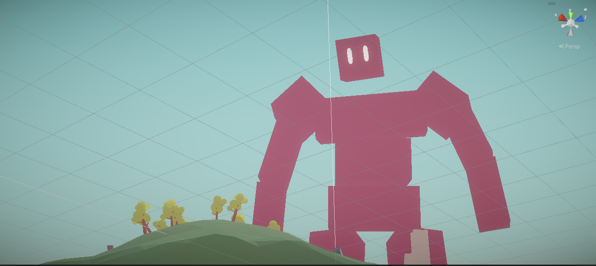

Hi! My name is Colsen Stiles. I graduated from the University of Illinois at Urbana-Champaign (UIUC) with a Bachelor's Degree in Statistics and Computer Science. I am currently looking for a career in a CS-related field such as software engineering, data science, cyber-security, and more! If you want to get in touch, please message me!
Experience
Data Structure Course Assistant at University of Illinois at Urbana-Champaign
Hello
Projects
Handmade 3D Game Engine (C/C++/Zig)

This passion project is a fully featured game engine framework designed to be immediately useful without sacrificing low-level power. It emphasizes utility, scalability, and adaptability, with minimal dependencies (more details here). In order to ensure that this engine is well designed, I used it to create a multiplayer shooter game, which are often cited as being hard to implement.
Here is a list of the biggest features that I implemented from scratch:
-
3D Asset Importer (GLTF/JSON Parser)
- Takes in 3D asset files and imports them into your game application with a single function call!
- Creates a parse tree representation of the file, which is used to reconstruct the data in-engine.
- Supports 3D meshes, animations, textures, and materials.
-
Animation System
- Full support for 3D animations.
- Animation blending and transitions work efficiently.
-
Data-Oriented Entity Component System
- A dynamic system that replaces inheritance by using collections of components. Anything can become anything else in your game.
- Component data is stored in contiguous arrays, saving storage over traditional plain structs with fields.
- The "Archetype" technique is used to optimize for entity iteration speed, which is huge for having lots of game objects!
-
Physically Based Renderer (PBR)
- Uses industry-standard PBR (physically based rendering) techniques to create realistic visuals.
- OpenGL backend.
-
Physics Collision System
- Ray-casts, time-of-impact calculation, GJK-based collision detection and solver.
- Octree-based spatial acceleration structure to narrow only to potential collisions.
- Collision functions come in general-use variants and low-level variants.
-
Multithreaded Parallelism
- Worker threads are used to process entities in parallel where there aren't data dependencies.
- The audio engine uses a dedicated thread without using mutex locks.
-
Networking Framework
- Network channels and RPC's are used to make netcode fast to write and easy to read. Perfect for changing specs!
- Has been used to create a fast-paced multiplayer shooter game (the hardest practical use case I could think of).
Fast-Paced Multiplayer Shooter Game
This is a game I implemented using my custom game engine.
-
Fast-Paced, Real-Time Netcode
-
Server Authority
- Server's application state is the source of truth.
- Everything simulates on a single server machine, ensuring perfectly consistent gameplay interactions.
- Clients cannot affect game state - only their own inputs. This restricts malicious clients from tampering with the server.
-
Client-Side Prediction
- Certain interactions are vital to user experience and latency-sensitive, such as player movement and controls.
- The control input data gets sent to the server, but we can also use it on the client to predict player movement in a latency-free way.
- The predictions are rarely corrected by the server if needed.
- The result is latency-free user interactions! This is state of the art.
-
Fast, Reliable UDP Communication
- UDP is used over TCP for its speed and low overhead, however it is unreliable and leads to bad experience if used directly.
- Taking advantage of the game loop, I achieve reliability by sending redundant packets over multiple frames.
- Network messages are buffered on the server to trade latency for consistency - adapts to poor network conditions!
-
Server Authority
Contact
E-Mail
colsenstiles@gmail.com
Linkedin